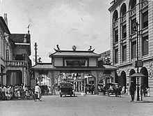
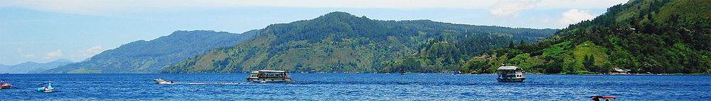
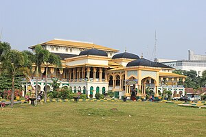
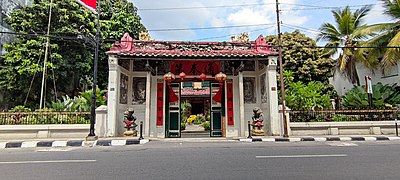

Sejarah

Kota Medan, Indonesia, terletak di bagian utara Pulau Sumatera dan memiliki sejarah yang
dipenuhi dengan warisan kolonial dan kekayaan budaya. Didirikan pada abad ke-17 oleh Belanda
untuk memfasilitasi perdagangan rempah-rempah, kota ini tumbuh menjadi pusat administrasi dan
ekonomi selama masa penjajahan. Dengan perkembangan perkebunan tembakau, karet, dan kelapa sawit
pada awal abad ke-20, Medan menjadi salah satu kota terbesar di Indonesia. Bangunan bersejarah
seperti Maimun Palace mencerminkan era kolonial, sementara keanekaragaman etnis dan budaya
memberikan warna khas kepada kota ini.
Pada masa kemerdekaan Indonesia, Medan mempertahankan peran pentingnya sebagai pusat ekonomi dan
administrasi di Sumatera Utara. Kini, kota ini tidak hanya menonjolkan sejarahnya yang kaya,
tetapi juga menjadi tempat untuk mengeksplorasi keindahan alam dan keberagaman budaya,
terutama dengan adanya destinasi wisata seperti Danau Toba dan Maimun Palace.
Keberagaman etnis dan bahasa, dengan Bahasa Indonesia dan dialek-dialek lokal seperti bahasa Batak,
memperkaya budaya kota ini, sementara acara budaya dan festival mencerminkan toleransi dan harmoni
antaragama yang mengakar dalam kehidupan sehari-hari masyarakat Medan.
Geografis

Medan, Indonesia, terletak di bagian utara Pulau Sumatera, berbatasan dengan Selat Malaka yang merupakan
jalur pelayaran internasional utama. Keberadaannya yang dekat dengan Danau Toba menjadikannya sebagai
gerbang wisata untuk destinasi populer ini. Secara topografi, Medan memiliki daerah yang relatif datar,
namun sekitarnya dapat mencakup pegunungan dan bukit. Iklimnya bersifat tropis dengan dua musim,
yaitu musim hujan dan musim kemarau. Kondisi geografis dan iklim ini memainkan peran penting dalam
mendukung pertumbuhan ekonomi dan daya tarik pariwisata kota ini.
Kota Medan memiliki luas 26.510 hektare (265,10 km²) atau 3,6% dari keseluruhan wilayah Sumatera Utara.
Dengan demikian, dibandingkan dengan kota/kabupaten lainya, Medan memiliki luas wilayah yang relatif kecil
dengan jumlah penduduk yang relatif besar. Secara geografis kota Medan terletak pada 3° 30' – 3° 43'
Lintang Utara dan 98° 35'–98° 44' Bujur Timur. Untuk itu topografi kota Medan cenderung miring ke utara
dan berada pada ketinggian 2,5–37,5 meter di atas permukaan laut.
Wisata
Sejak dibukanya Jalan Tol Cipularang, kota Bandung telah menjadi tujuan utama dalam
menikmati liburan akhir pekan terutama dari masyarakat yang berasal dari Jakarta
sekitarnya. Selain menjadi kota wisata belanja, kota Bandung juga dikenal dengan
sejumlah besar bangunan lama berarsitektur peninggalan Belanda.
Istana Maimun

Istana Maimun disebut juga Istana Kesultanan Deli, dibangun oleh Sultan Makmun Al-Rasyid tahun 1888.
Istana ini sudah telah pernah direnovasi (mengalami perbaikan). Istana ini masih tetap dimiliki oleh
Sultan dan keluarganya. Pada masa lalu menurut Sejarah Kesultanan Deli, Istana Maimun adalah jendela
untuk masuk kemasa kejayaan kerajaan.
Rumah Tjong A Fie

Tjong A Fie adalah Majoor der Chineezen atau Wali Kota pertama untuk komunitas China di Kota Medan.
Tjong A Fie merupakan seorang pengusaha, bankir dan kapitan golongan Hakka asal Meizhou, Guangdong, Tiongkok.
Tjong A Fie sukses membangun bisnis besar dalam bidang perkebunan di Sumatra, Indonesia.
Tjong A Fie membangun bisnis besar yang memiliki lebih dari 10.000 orang karyawan dan karena kesuksesannya
tersebut Tjong A Fie sangat dekat dengan para kaum terpandang di Medan, di antaranya yaitu Sultan Deli,
Ma'moen Al Rasyid serta pejabat-pejabat kolonial Belanda. Sebagai pemimpin masyarakat Tionghoa, Tjong A Fie sangat
dihormati dan disegani. Bisnis Tjong A Fie meliputi perkebunan, pabrik minyak kelapa sawit, pabrik gula,
bank dan perusahaan kereta api.
Rumah ini dibangun sejak 1895, Rumah dengan luas 8.000 meter ini memiliki dua lantai dan 35 kamar.
Rumah ini memiliki dua patung besi Foo Lions yang dibuat secara unik dan didekorasi secara artistik
sebagai penjaga gerbang utama. Rumah dengan lantai yang terbuat dari ubin Venesia ini memiliki perabotan
lampu yang indah yang merupakan kombinasi dua budaya yaitu Cina dan Eropa. Terdapat ruangan besar salah
satunya kamar tidur mendiang Tjong A Fie yang menunjukkan tempat tidur mahoni, pakaian sutra dan artefak
di zaman dulu. Di luar kamar tersebut, pengunjung akan menemukan ruang makan keluarga, dapur yang
ukurannya besar lengkap dengan alu dan batu mortar kuno, sedangkan di lantai dua terdapat kuil Kwan Ti Kong
dan Ballroom.